Dynamic efforts
Review of plans/dynamic-efforts.md (round-4 mockup). A fourth lap source,
Efforts, detected from the record stream (V2: PELT edges on 5 s bins, labels against FTP /
threshold pace / HR reserve), with one summary chip, a profile nudge and the
<count> <source> pill grammar for every source. Built on top of the
uncommitted training-load recompute and onboarding redesign; their code is untouched.
Everything is in the working tree; nothing is committed.
Review round 1 fixes
R6Efforts row: the hover box covers the nudge line
The hover and checked background now sit on the row wrapper. The radio's
pb-8 reserves the nudge line, and the link sits on top of it as an absolutely
placed sibling, because a link can't nest inside the radio button. Clicking the empty part
of that line selects Efforts. The link still opens Settings when the row is disabled, and
it never toggles the radio. The row height is unchanged (both 40 px of padding plus the
line).
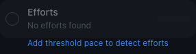
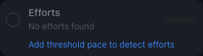
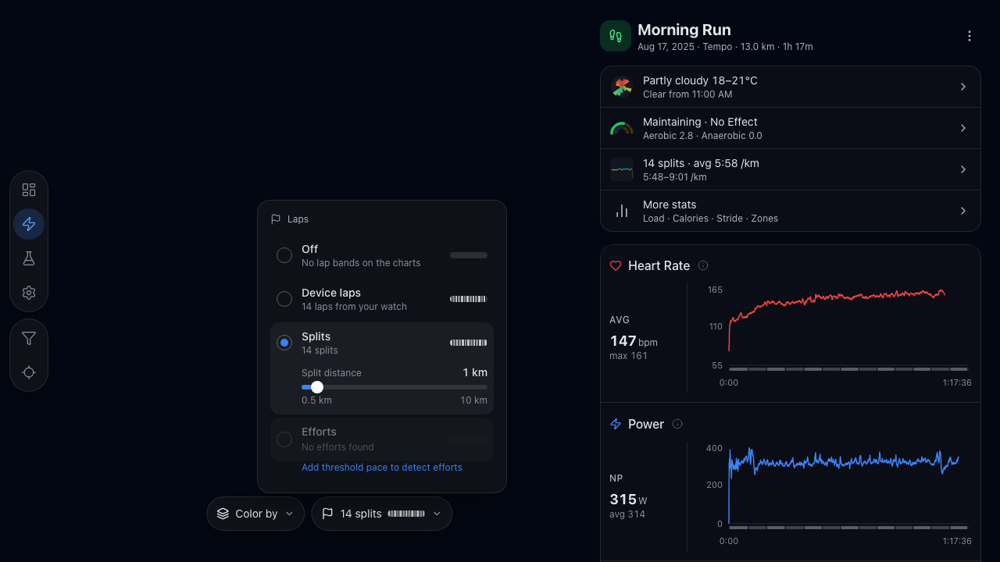
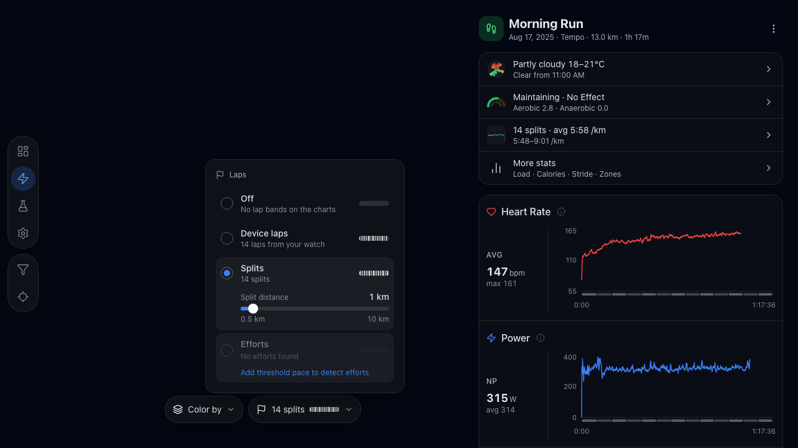
User-visible changes
C1Efforts row with one summary chip
A fourth row "Efforts" / "Belastungen" sits under Splits. Its caption line is one
Chip: the pattern 5 × 4:00 · power when every work block is
within ±10 % of the mean moving time, otherwise the count 7 efforts · pace.
DE 5 × 4:00 · Leistung, 6 × 3:00 · Pace. The swatch shows the
effort set. Picking the row closes the popover like Off / Device laps. The popover stays
w-80 and both lines are reserved (h-5, h-4), so
nothing jumps between sessions.
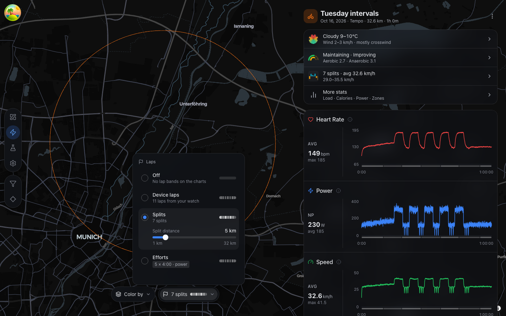
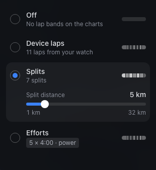
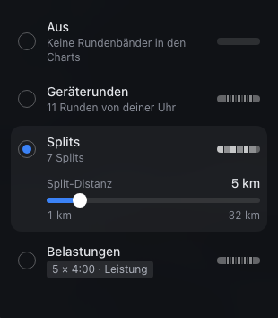
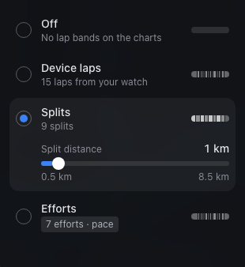
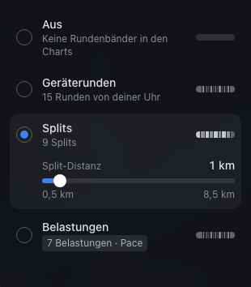
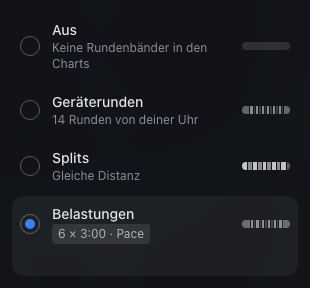
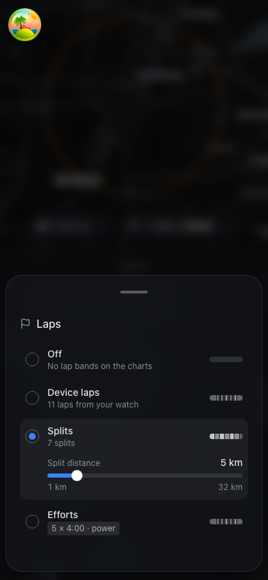
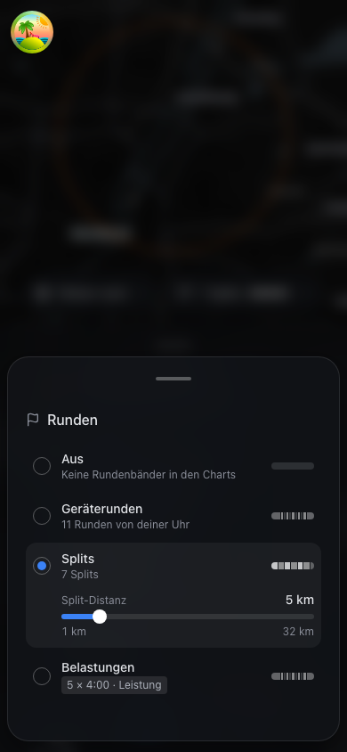
C2Nudge link when a fallback signal was used: "…for precise efforts"
Profile without FTP / threshold pace: the ride falls back to heart rate, the chip ends in
· heart rate ≈, and the reserved line below the row links to Settings with
"Add FTP for precise efforts" / "FTP eintragen für genaue Belastungen". Runs say "Add
threshold pace for precise efforts" / "Schwellentempo eintragen für genaue Belastungen".
The link sits outside the radio item, so it stays clickable.
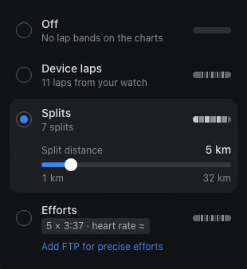
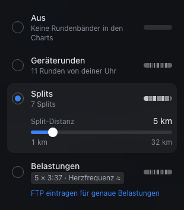
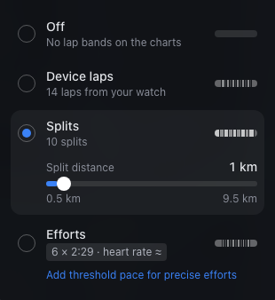
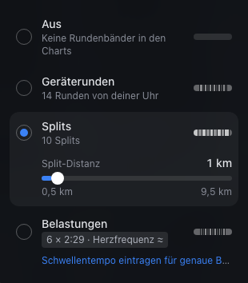
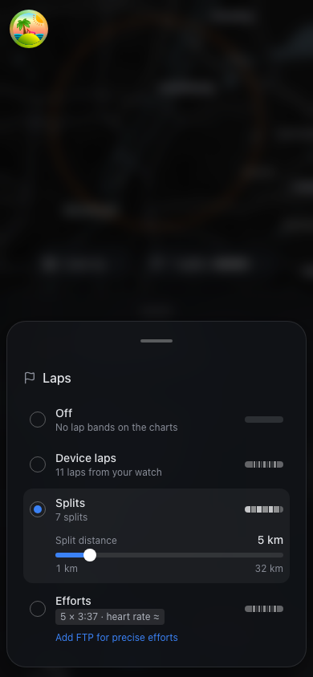
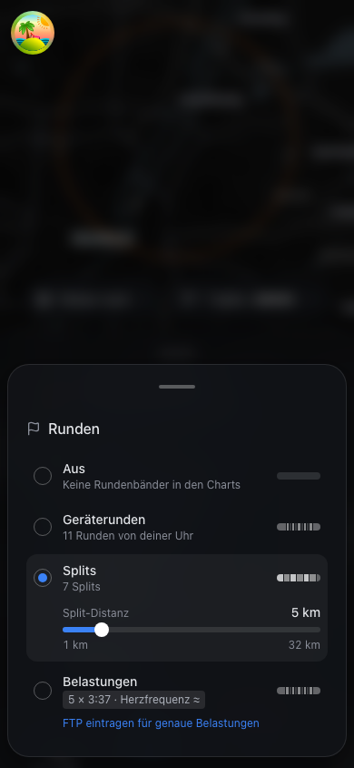
C3Disabled "No efforts found" row with "…to detect efforts"
Power-only trainer ride (no HR) and no FTP: no usable signal, so the row is disabled with
the plain caption "No efforts found" / "Keine Belastungen erkannt". The link "Add FTP to
detect efforts" / "FTP eintragen, um Belastungen zu erkennen" stays active. Without
limitedBy (e.g. an endurance ride) the line stays empty. A stored
efforts source on such a session stays checked and disabled, and the pill
reads "Laps".
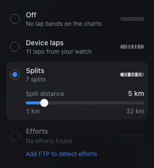
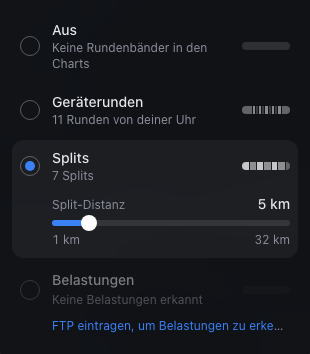
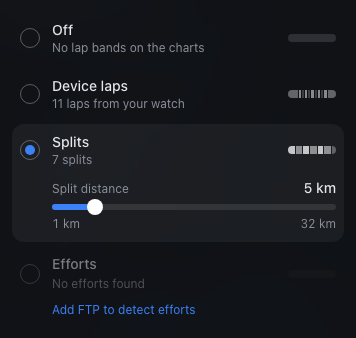
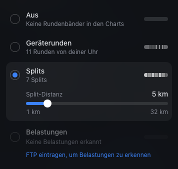
C4Pill grammar <count> <source>
Every lap source now reads count + source: 11 device laps /
11 Geräterunden (was "11 laps" / "11 Runden"), 7 splits /
7 Splits (was "5 km splits" / "5-km-Splits"), 5 efforts /
5 Belastungen (work blocks only). Off stays "Laps" / "Runden". No chip or
pattern in the pill. The new device wording also shows in the device row caption when
selected and in the summary row. On phone the bar scrolls as before.
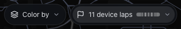
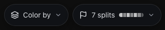
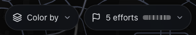
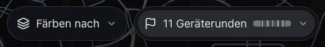
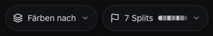
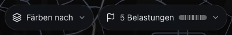
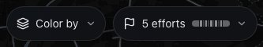
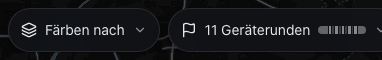
C5Stepper name slot 104 px; effort names
The stepper is unchanged apart from the name slot, which grows from
w-[72px] to w-[104px] for every source, so "Gleichmäßig 12"
fits. Effort names come from the block kind plus an ordinal per kind: Work / Rec / Steady
n, DE Belastung / Erholung / Gleichmäßig n. Non-work names stay tertiary as before.
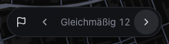
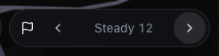
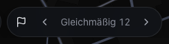
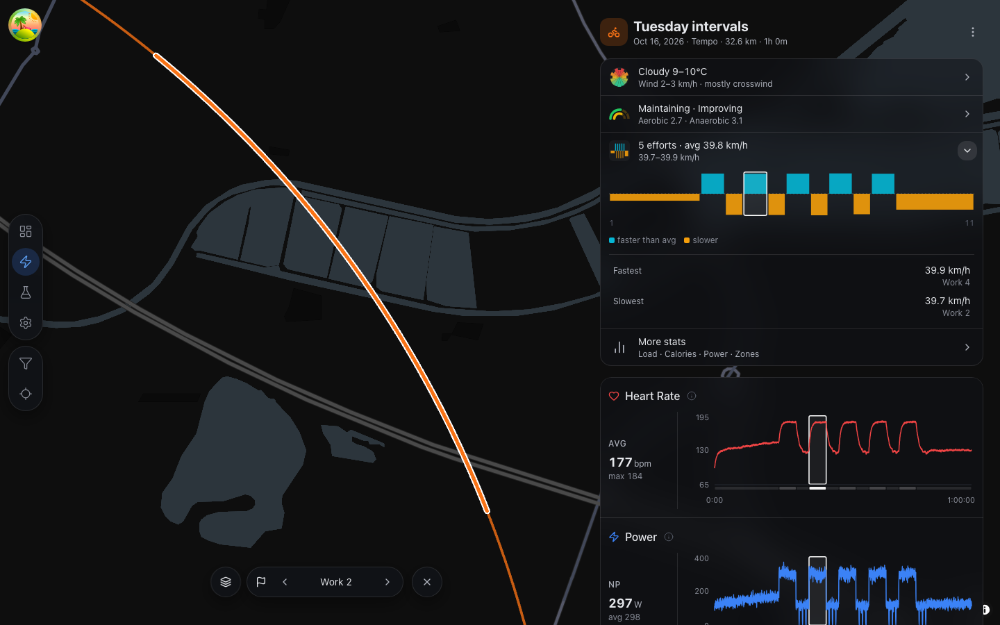
C6Steady shade in the lap swatch
Steady blocks get their own shade rgba(255,255,255,.45) in the swatch (picker
row and pill), between work (.75 / .5), warm-up / cool-down (.35) and rest (.18). No
hatched bridge overlay and no legend.
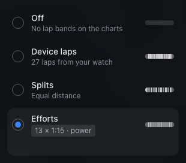
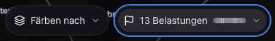
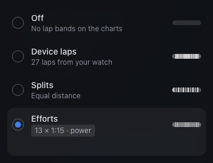
C7Summary-card laps row counts work blocks
With efforts selected, the laps row in the summary card reads "5 efforts · avg 39.8 km/h". Count, average, fastest and slowest are taken over work blocks only; the extremes are named "Work 4" / "Work 2". The strip below still draws all blocks. A session without efforts shows the disabled row "No efforts found" · "Choose splits in the Laps control".
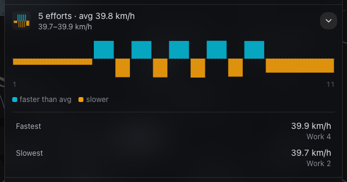
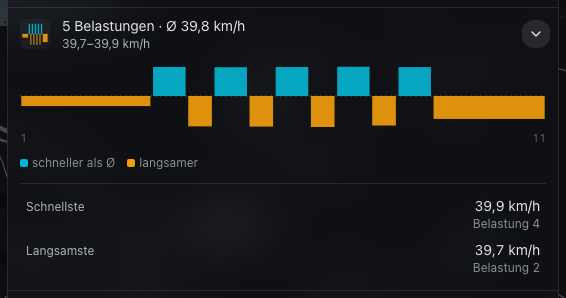
C8Sport-specific DE warm-up / cool-down
Leading / trailing low blocks of at least 3 min become warm-up / cool-down. DE uses Einfahren / Ausfahren on rides and Einlaufen / Auslaufen on runs; EN uses Warm-up / Cool-down for both.
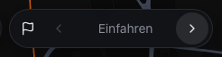
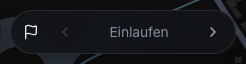
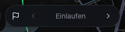
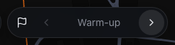
C9Map and chart highlight of a selected effort
No new map code: an effort set has the same spans / bands as
device laps, so selecting "Work 2" highlights that stretch of the track, frames the
charts, and outlines the block in the summary strip.
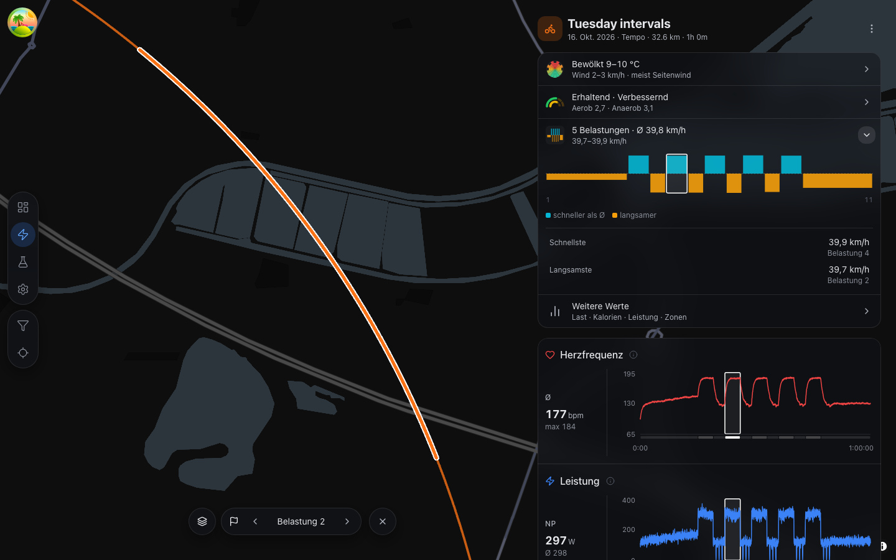
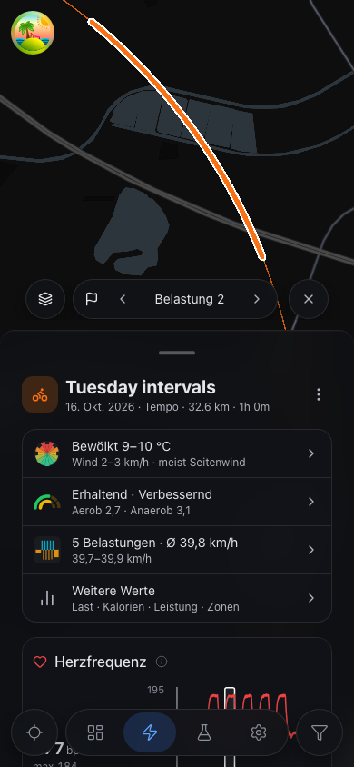
Changes without UI
N1Engine: effortDetection.ts
Pure port of the mockup V2 detect(): 1 s grid (gaps ≤ 10 s hold the closing
record, longer gaps and stops > 10 s are breaks), signal pick (ride power → HR, run GAP
→ HR, ≥ 50 % coverage, limitedBy when a threshold is missing), PELT on 5 s
bins with real pruning, threshold labels, postprocess (merge, bridge ≤ 130 s, min work,
absorb < 20 s, steady ≥ 5 min, edge refine ±5 s, warm-up / cool-down ≥ 3 min) and the
three guards. Never throws; recorded 0 W stays 0, missing values are NaN internally.
Observable: 1.6–3.5 ms per 2.7–3.3 h demo session in Node, including
lapBands. src/packages/engine/effortDetection.ts:629.
N2SOURCES.md
Three Validation Summary rows (Killick2012, Hampel1974, Karvonen1957), two bibliography
entries and one App-Specific Logic row with every default.
src/packages/engine/SOURCES.md:37-39, :71-72, :85.
N3Lib: effortLaps.ts and
buildLapSet
buildEffortLapSet maps blocks to spans, bands and
LapAnalysis (engine moving time, record distance diff,
KIND_INTENSITY, isInterval = work), plus
effortWorkSet / effortWorkCount / effortPattern.
LapSource gains efforts, LapSet.efforts carries
signal + limitedBy, and buildLapSet takes a 5th
effortContext. useSessionLapsEffect resolves thresholds at the
session date. src/lib/effortLaps.ts:40,
src/lib/lapSet.ts:9,32,62-68,
src/features/sessions/session/hooks/useSessionLapsEffect.ts:16-33,
SessionMapControls.tsx:35.
N4Store enum
LAP_SOURCES gains efforts; no persist version bump (shape
unchanged, the enum only widens; unknown values still fall back per field).
src/store/mapPreferences.ts:22.
N5Shared Chip
New src/components/ui/Chip.tsx (caption,
rounded bg-white/10 px-1.5 py-0.5).
DialogHeader (Dialog.tsx:177) and the metric help header
(MetricLabel.tsx:29) now use it; their look is unchanged.
N6Dead code removed
splitKm and kmFmt (lapLabels.ts) and the message
key ui_laps_pill_splits (EN + DE) are deleted; the splits pill uses
ui_laps_splits_count / _one.
N7Tests
tests/packages/engine/effortDetection.spec.ts (8 cases: 5×4 min edges ±5 s
with warm-up / cool-down, 3 h endurance → none, TT → none, 2:00 stop bridged with moving
time = elapsed − 120 s ±5, 2:30 stop splits, HR-only starts ±20 s, no FTP → HR +
limitedBy, power-only no FTP → empty).
tests/lib/effortLaps.spec.ts (pattern ±10 %, 20 % outlier → none).
e2e/sessions.spec.ts:114,155,164 now expect /^\d+ splits$/.
Deviations from the plan
-
Extra exported constants.
EFFORT_EDGE_TRACE_S(the 5 s trace the edge refine searches, mockupDEF.*.edge),EFFORT_MAD_SCALE(0.6745, Hampel) andEFFORT_SIGNAL_LIMITERS(power → ftp, pace → thresholdPace) are named constants per engine CLAUDE.md. Values are the mockup's.effortDetection.ts:58-71. -
Moving time from the break mask. The mockup tracks bridge lists per block; the port
counts non-break seconds in each block instead. Same result, and it stays correct if an
edge refine moves a boundary next to a bridge.
effortDetection.ts:413. -
endIndexis the record at the next block's start when blocks touch (shared boundary, like splits), else the last record before the break, so stop and gap records belong to no block.effortDetection.ts:675-676. -
FTP or threshold pace ≤ 0 counts as missing (sets
limitedBy), so the engine never divides by zero. -
SIGNAL_LABELSlives inlapLabels.ts(next toeffortChipLabel, its only user) instead ofLapsControl.tsx.LIMITER_LABELSis inLapsControl.tsxas planned. -
effortWorkSet(exported fromeffortLaps.ts) is the work-only view used for the summary row and its fastest / slowest (decision Q1);effortWorkCountuses it. -
Picker memo. The effort result reuses
currentonly whencurrent.effortsis set, not onsource === 'efforts'alone, because the session set lags one render behind a source switch. The splits memo passesthresholds: undefined(unused for splits) so a profile edit doesn't rebuild it. -
Test id
laps-efforts-rowon the efforts row (used for the captures; harmless). - Capture data. The brief said the demo sessions have no structured intervals; they do (see O2), but their warm-ups come out as work, so the captures use synthetic sessions instead (see Verification).
Open points for your review
-
O1 · DE detect nudge truncates on desktop. "FTP eintragen, um Belastungen zu
erkennen" needs ~245 px, the line has 240 px in
w-80; it ends in "erke…" (C3). Phone fits. Options: keep (plan:truncateis the safety net), shorten the DE string (e.g. "FTP eintragen zum Erkennen"), or drop the line'spr-2. Nothing changed. - O2 · Demo data with the plan defaults. Run over all 233 demo sessions: 6×800 m Isar, 5×1 km Isar, 3×2 km tempo and Sweet spot 3×12 find their reps, but the warm-up is labelled work (demo warm-up pace is faster than 0.88 × threshold speed of 5:00/km = 5:41/km), so the chip shows a count, not the pattern. Hilly demo rides (Lago di Tenno climb, Passo San Giovanni loop) give 10–20 climb "efforts". Easy runs, long runs and flat rides find none. Follow-up: tune the demo persona or the defaults.
- O3 · HR edges stay late on slow HR. On the synthetic run without threshold pace the HR blocks read 2:29 against 3:00 true (min work 120 s, fixed 30 s shift). This is expected and why the chip says "≈".
-
O4 · Whole-tree
vp checkfails outside this feature. Oxfmt can't parsereviews/onboarding-redesign/index.html:438(double quotes inside analt), which stops the format step before it starts. I didn't touch it (out of scope). Fix the alt text, or addreviewstofmt.ignorePatternsnext tomockups(vite.config.ts:28).vp check src tests e2e messagespasses. -
O5 · Hot-path check. Measured in Node, not in DevTools: 1.6–3.5 ms per 2.7–3.3 h
session including
lapBands, far below the ~84 ms laps baseline.
Verification
| Command | Result |
|---|---|
vp build (first) |
pass |
vp check (whole tree) |
fails before formatting starts: oxfmt cannot parse
reviews/onboarding-redesign/index.html:438 (O4, not part of this feature).
vp check --no-fmt: pass (lint + types, 561 files). Format check of every
other path (src tests e2e messages reviews/dynamic-efforts and the
remaining root paths): pass
|
vp test -- --run |
pass, 133 files / 1314 tests (10 new) |
vp exec playwright test |
first full run during development: 83/83. Final full run: 82 passed,
mobile/map.spec.ts:480 failed ("no lap on the visible map", known
parallel-load flake); :480 and :281 pass with
--workers 1
|
vp build (final) |
pass |
How to check it yourself
- Open an interval ride with power and FTP set: Laps pill → the Efforts row shows "N × m:ss · power"; pick it, the pill reads "N efforts", chart bands match the reps.
- Device laps / Splits in the pill read "12 device laps" / "6 splits" (DE "12 Geräterunden" / "6 Splits"); Off reads "Laps".
- Settings → remove FTP: the row falls back to "… · heart rate ≈" with "Add FTP for precise efforts", which opens Settings.
- A power-only trainer ride without FTP: disabled "No efforts found" with an active "Add FTP to detect efforts". An endurance ride: "No efforts found", no link.
- A run without threshold pace: the threshold-pace nudge.
- Pick a block on a chart: the stepper steps through Work / Rec / Steady and the warm-up names (DE: Einfahren vs Einlaufen); "Gleichmäßig 12" fits.
- Summary card: the laps row counts work blocks only and names fastest / slowest "Work n".
-
Engine only:
vp test -- --run tests/packages/engine/effortDetection.spec.ts tests/lib/effortLaps.spec.ts.